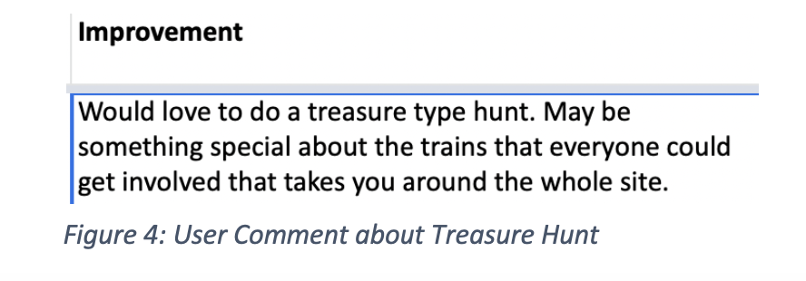

Abigail Kotar
Software. Data. Design.
InterTracktion: User Experience
After visiting the National Railway Museum in York, I was tasked with making the museum more interactive. The museum features incredible trains, but there is little movement or information on the trains. In Figma, I designed a mobile application that used Augmented Reality to explore the trains. I analyzed exisiting user data and then conducted usability research to develop a final prototype.
Demo
Research
The National Railway Museum provided us access to their data from their survey. While reviewing this data, there were a few common trends I noticed.
As seen above, this user requests a treasure hunt along with other vistors who requested a more interactive experience for all ages. During my visit, I started playing Pokemon Go, which inspired me to create an Augmented Reality based mobile application that acts like a treasure-hunt through all the trains.
User Journey
Based on the National Railway Museum's data and their focus on accessibility and inclusion, I created two personas.

My primary persona is Hugh, who is a train lover! He cannot climb into old trains due to his wheelchair but craves a way to interact with the trains.
Wireframing
I then started designing the wireframes to include features that my personas and user research reflected.
Based on my functional and non-functional requirements, I designed wireframes like the model above in Balsamiq.
Prototype
I started designing the prototype based on the wireframes and the National Railway Museum's color palette on their website.
I went through mutiple iterations and then completed usability testing, which lead me to alter a few more features.